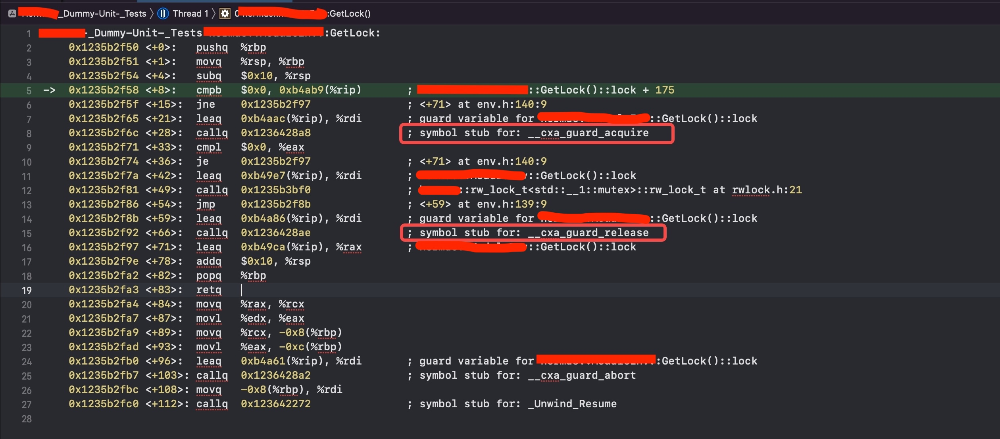
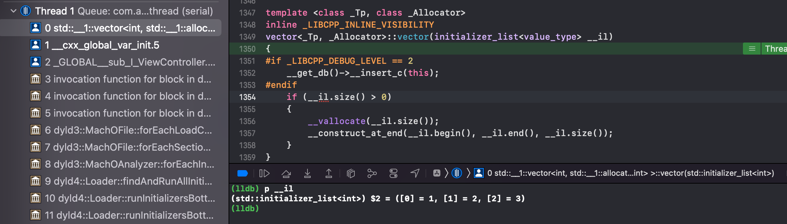
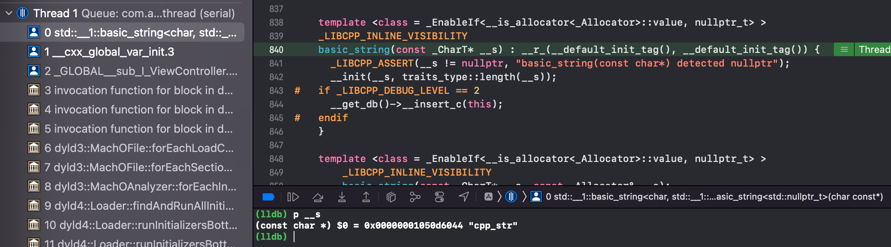

背景
在 C++
中，不同编译单元之间的静态变量的构造和析构的调用顺序是不确定的，甚至会随着构建变化而变化，这样会导致许多难以预料的问题。如果将C++代码放置于iOS工程中，由于调用时机又会引发一些额外的问题，这将会使得问题更加严重。本文将结合之前碰到的静态变量的一些问题做个总结。
同一个编译单元内是明确的，静态初始化优先于动态初始化，初始化顺序按照声明顺序进行，销毁则逆序。不同的编译单元之间初始化和销毁顺序属于未明确行为 (unspecified behaviour)
备注：本文实验环境：C++14
关键字 static 的含义
在展开之前，先来了解下泛C语言中static的含义，主要涉及OC、C和C++。
| 修饰对象 | 语言 | 存储区域 | 可见性 | 初始化时机 |
|---|---|---|---|---|
| 静态全局变量 | OC/C | Data | 文件可见 | main之前 |
| 静态局部变量 | OC/C | Data | 函数或语句块内可见 | 首次使用 |
| 静态函数 | OC/C | Text | 文件可见 | - |
| 静态数据成员 | C++ | Data | 含义发生变化，可见性使用public、protected和private表达 | main之前 |
| 静态成员函数 | C++ | Text |
含义发生变化，可见性使用public、protected和private表达 | - |
- static用于修改标识符(变量或者函数)的链接属性或者存储类型，从而影响可见性和存储区域；
- 除了可见性，全局变量和静态全局变量没有其它本质的不同；
- 对于 C++ 的类成员变量/函数，static 关键字已然是另一层含义，并不能达到隐藏符号的效果
未经初始化调用崩溃问题
由于静态函数和静态成员函数并没有初始化的问题，所以初始化时机主要针对静态变量
问题引发
最近遇到了这样的崩溃：
1 | libc++abi: terminating with uncaught exception of type std::__1::system_error: mutex lock failed: Invalid argument |
经过排查发现：某个+load一路走到最后，触发了C++静态变量的调用，然而此时C++静态变量还未初始化。
这个静态变量是这样实现的：
1 | // env.h |
静态变量的局部化
+load的时机是早于C++的静态变量初始化的时机的，所以这里可以采用懒加载的方式，将全局静态变量修改为局部静态变量。
1 | static rwlock& GetLock() { |
有同学可能怀疑这个地方是否有多线程的问题。这个代码在C++11之前的确会有多线程问题，但是在之后是OK的，C++11规定了local
static在多线程条件下的初始化行为，要求编译器保证了内部静态变量的线程安全性。根据cxxabi的描述，C++编译器产生的代码如下所示：
1 | if ( obj_guard.first_byte == 0 ) { |
可以看下GetLock方法对应的汇编代码，可以发现逻辑基本是一致的

更多的cxxabi细节可以参考这里：https://opensource.apple.com/source/libcppabi/libcppabi-14/
初始化类型问题
那么问题来了，下面的这些静态变量是如何初始化的呢？
1 | // CppClass |
一般来说：
- 如果全局变量的内存全部为 0，或者初始化依赖于运行时信息，那么会被存储在
__DATA, __bss中- 如果全局变量初始化的值可以在编译时确定，那么它会被存储在
__DATA, __data，且不需要在运行时触发__cxx_global_var_init
通过Demo验证，可以发现：
- 非高亮的几行的初始化的值都是在编译时可以确定的，不会触发
__cxx_global_var_init； - 高亮的几行在编译的时候，由于值无法确定，需要依赖运行时，所以需要生成对应的构造方法：
___cxx_global_var_init.xxx，并在运行时触发__cxx_global_var_init调用，而唯独缺失的CppClass着实令人意外。
1 | ➜ test.app nm test | grep cxx_global |
几点说明
关于调用函数返回值来初始化静态变量，这里做个详细解释
obj的初始化依赖[[NSObject alloc] init]的返回值，这肯定无法在编译时确定；cpp_str的初始化看起来很简单，只是要保存“123”，但是这个需要调用std::string的构造函数。
vec的初始化看起来也很简单，只是个字面量{1,2,3}，但是需要依赖std::vector的构造函数（可以看到{1,2,3}被初始化为std::initializer_list，然后std::initializer_list又作为std::vector的参数)
Trivial default constructor
究竟什么样的C++类的静态对象会引发__cxx_global_var_init？
怀着试一试的态度，在CppClass中添加了1个string类型的变量name
1 | struct CppClass { |
结果此时__cxx_global_var_init被触发调用。于是不由地想到，这应该和C++的构造函数是否是trivial有关系。（trivial表示无关紧要的，不重要的）
https://en.cppreference.com/w/cpp/language/default_constructor
Trivial default constructor
The default constructor for class
Tis trivial (i.e. performs no action) if all of the following is true:
- The constructor is not user-provided (i.e., is implicitly-defined or defaulted on its first declaration)
Thas no virtual member functionsThas no virtual base classes- Every direct base of
Thas a trivial default constructor- Every non-static member of class type (or array thereof) has a trivial default constructor
A trivial default constructor is a constructor that performs no action. All data types compatible with the C language (POD types) are trivially default-constructible.
一个类的构造函数如果是trivial类型，需要满足以下条件：
- 构造函数非用户提供（直接写CppClass() =
default，也是非用户提供，但是
CppClass() {}则是用户提供的）； - 没有虚函数；
- 没有虚基类；
- 基类必须有
trivial构造函数； - 每个非静态的
class类型成员必须有trivial构造函数；
trivial default constructor通常没有任何操作，执行与否没有差别（和C兼容的POD类型通常都是trivial default constructor）。因此如果一个构造函数如果没有任何操作，那么编译器也就没必要继续调用。
可以使用以下代码简单地验证一个C++类的构造函数是否是trivial：
1 | // code |
1 | // add user-provoided construction |
通过代码验证，以上4种行为均会触发__cxx_global_var_init的调用，这大概率证明前面的猜想是正确的。另一方面也可以发现，对于大部分C++的类，其构造函数满足trivial并不是一件容易的事情，这里只是巧合。
Trivial copy assignment operator
如果把上面的代码修改为
1 | static CppClass cppObj2 = CppClass(); |
这就涉及到C++
https://en.cppreference.com/w/cpp/language/copy_assignment
Trivial copy assignment operator
The copy assignment operator for class
Tis trivial if all of the following is true:
- it is not user-provided (meaning, it is implicitly-defined or defaulted);
Thas no virtual member functions;Thas no virtual base classes;- the copy assignment operator selected for every direct base of
Tis trivial;- the copy assignment operator selected for every non-static class type (or array of class type) member of
Tis trivial.A trivial copy assignment operator makes a copy of the object representation as if by std::memmove. All data types compatible with the C language (POD types) are trivially copy-assignable.
补充
拷贝构造函数不一定会被调用，因为现代C++有copy elision优化，首先表示对
吴仪同学的感谢，接下来验证下：
1 | struct CppClass { |
再定义2个静态变量：
1 | static CppClass cppObj = CppClass(); |
观察下打印结果：
1 | CppClass Construction called |
确实被优化掉了，只调用了1次构造函数，并没有调用拷贝构造。
查了下官网，发现这个行为也比较依赖编译器
https://en.cppreference.com/w/cpp/language/copy_elision
Copy elision is the only allowed form of optimization (until C++14)one of the two allowed forms of optimization, alongside allocation elision and extension, (since C++14) that can change the observable side-effects. Because some compilers do not perform copy elision in every situation where it is allowed (e.g., in debug mode), programs that rely on the side-effects of copy/move constructors and destructors are not portable.
In a return statement or a throw-expression, if the compiler cannot perform copy elision but the conditions for copy elision are met or would be met, except that the source is a function parameter, the compiler will attempt to use the move constructor even if the object is designated by an lvalue; see return statement for details.
值覆盖问题
静态变量的坑，除了崩溃问题，还有更加隐蔽的值覆盖问题
1 | static NSObject *obj = [[NSObject alloc] init]; |
以上面的4个会触发__cxx_global_var_init调用的静态变量为例，如果在+load中对这些值进行提前初始化：
1 | + (void)load { |
那么在viewDidLoad再次打印这些值：
1 | obj = <NSObject: 0x600002dcc010> |
可以看到这些值又被__cxx_global_var_init的调用修改回去了。
这个值覆盖现象的发现来自于笔者一次偶然的画蛇添足行为：当时MMKV一直提示
1 | MMKV not initialized properly, must call +initializeMMKV: in main thread before calling any other MMKV methods |
于是就在+load中去调用了[MMKV defaultMMKV]:
1 | @implementation MMKV (Extension) |
结果导致MMKV在+load中已经初始化的g_basePath又重置了回去，变为nil，从而导致存储失败。(这一现象仅发生在iOS10的设备上，年代久远，记忆只保持个大概，回头有时间这里可以详细补充下）
析构崩溃问题
问题引发
在解决掉前面的未初始化调用崩溃问题后，Fastbot上又发现了新的静态变量的崩溃：
1 | CPP_Exception std::_1: system_error |
崩溃的地方如代码所示（没错，和上面修改后的代码是一致的），代码正在访问锁，但是锁不可用了。
1 | template <typename Derived, bool ThreadSafe = true> |
通过观察，发现在另一个线程中有_exit方法的调用，可以判定为程序正在退出
1 | 9 libsystem_c.dylib _cxa_finalize_ranges (in libsystem_c.dylib) |
那么可以推断为正在使用的静态变量锁在程序退出的时候被另一个线程析构了。
阻止析构
这个问题有这么几种解决方式
xcconfig禁止析构
这个方式直接在podspec里面进行配置，比较推荐
1 | s.xcconfig = { |
指针方式
该方式将静态变量声明为指针，去指向一个堆上的变量，这样由于静态变量是1个指针，本身没有析构函数，所以释放也无从谈起。
1 | static rwlock& GetLock() { |
谷歌大法
1 | // https://chromium.googlesource.com/chromium/src/base/+/master/no_destructor.h |
1 | static rwlock& GetLock() { |
NoDestructor看起来似乎平平无奇，为什么可以解决析构的问题呢？
在这之前需要先了解下
Trivial Destructor:
https://en.cppreference.com/w/cpp/language/destructor#Trivial_destructor
Trivial destructor The destructor for class T is trivial if all of the following is true: The destructor is not user-provided (meaning, it is either implicitly declared, or explicitly defined as defaulted on its first declaration) The destructor is not virtual (that is, the base class destructor is not virtual) All direct base classes have trivial destructors All non-static data members of class type (or array of class type) have trivial destructors A trivial destructor is a destructor that performs no action. Objects with trivial destructors don’t require a delete-expression and may be disposed of by simply deallocating their storage. All data types compatible with the C language (POD types) are trivially destructible.
- 根据定义，
NoDestructor用户没有提供析构函数（=default），也不是虚析构函数，也没有基类，唯一的成员storage_也不是class类型，所以NoDestructor的析构函数为**Trivial Destructor**类型，不需要执行，而内存随进程退出而释放，不需要做收尾工作
1 | // code |
NoDestructor的构造函数、拷贝构造函数和移动构造函数，均采用了placement new的方式，直接在storage_内存上进行构造，placement new的特点是无法显式调用delete，这意味着通过placement new分配出来的rwlock对象，永远没有调用析构函数的机会（除非手动调用析构函数，但是这里明显不会这么做）。
总结
本文总结了若干静态变量的问题，这些问题比较隐蔽且不好排查，因此需要尽量去深入静态变量背后的机制，且尽可能地避免一些危险的行为：
- 尽量避免使用类的静态全局变量：由于构造和析构函数调用顺序的不确定性，它们会导致难以发现的
bug；另一方面如果对类的静态全局变量不加节制的话，会影响到启动耗时。如果非要使用，建议静态变量局部化，不仅线程安全，而且不会影响启动。 - 静态生存周期的对象，即包括了全局变量，静态变量，静态类成员变量和函数静态变量，都必须是原生数据类型
(
POD): 即int,char和float, 以及POD类型的指针、数组和结构体，或者保证class的类型是trivial类型。 - 尽量避免使用函数返回值来初始化静态变量；
- 尽量禁止静态变量的析构，由于析构可能会牵扯到多线程竞争问题，导致崩溃；
- 尽量避免在
+load给静态变量赋值，可能会导致值覆盖现象。 - 尽量避免在
+load触发静态变量的调用，因为静态变量可能尚未定义。